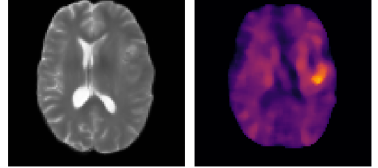

One unified, controlled comparison instead of scattered leaderboards — every method re-implemented the same way, at both image level (is the scan abnormal?) and pixel level (where?).
A plainly-tuned AE is far stronger than prior work credited — complexity ≠ guaranteed gains. → the table, next.
Shaky evaluation
Several popular datasets are saturated → reported "SOTA" gains are partly an evaluation artifact. → then.
Source —[15] Cai et al., MedIAnomaly, Medical Image Analysis 2025
Reality check · models
Don't chase SOTA — a tuned AE is a strong baseline
Image-level AUC (%) · MedIAnomaly Table 5 · 5 modalities · 7 datasets · 30 methods · bold = best on that dataset — the winner keeps changing.
Method
RSNACXR
VinDrCXR
Brain T.MRI
LAGretina
ISICderm
Camelyonpath
BraTSMRI
AE recon
67.5
56.4
85.9
79.0
74.5
36.8
82.6
AE-SSIM
80.9
54.5
92.7
67.6
77.0
38.0
80.3
AE-U
86.5
76.9
94.4
80.8
70.1
60.6
83.0
DAE
86.1
68.6
83.2
71.6
70.0
65.4
85.9
AnoDDPM-S diffusion
79.4
55.5
67.2
58.5
66.7
70.6
82.7
AutoDDPM diffusion
83.6
69.4
92.7
72.4
73.7
80.7
84.5
FAE-SSIM feature
91.1
70.2
93.2
84.6
77.2
39.7
81.6
ResNet18 ImageNet
87.0
67.4
97.2
80.5
71.7
73.2
72.8
AnatPaste self-sup
88.4
71.0
95.1
71.8
80.7
56.6
73.7
PII
81.9
65.7
83.5
59.6
71.9
44.3
54.3
NSA
82.4
62.0
82.1
66.0
73.5
45.6
53.5
An underrated baseline: a properly-tuned AE rivals far heavier models on most columns — diffusion (AutoDDPM) and ImageNet features pull ahead only on the hard ones (AutoDDPM tops Camelyon pathology, 80.7 vs AE 36.8), and no single method wins every column.
Metric matters too (AE→AE-SSIM +13 on RSNA). Bold = best in that column.
Sources —[15] Cai, MedIAnomaly, MedIA 2025
Reality check · evaluation
The bug is in the evaluation, not the model
MedIAnomaly's core message: the field lacks a fair, comprehensive evaluation — which muddies conclusions and holds it back. [15]
How to read the chart → on easy datasets a plain AE already scores ~99% — the metric is maxed out, so it can't tell methods apart. On hard datasets the same AE swings 37–68% — that's where real differences show.
The conclusion: much reported "SOTA" gain is an evaluation artifact — chasing saturated datasets, not real progress.
Genuinely hard: a map shows where — not what, how sure, or why.

brain MRI → anomaly heatmap
A heatmap over a brain MRI flags where the deviation is — but names nothing, gives no calibrated confidence, and can't say why. [31]
The barrier
A heatmap is indirect evidence — no name, uncalibrated score. Saliency can even be unfaithful: some maps barely change when the model is randomized[36].
What would help
Treat it as a lead, not a verdict: test faithfulness[36], calibrate into clinical confidence, move to named explanations [35]. It's a regulatory requirement[37].
Clinicians read the whole volume, but most methods score each 2D slice alone — losing 3D context. The fix isn't a giant 3D model; it's doing 3D efficiently.
A high balanced-set AUROC ≠ deployable — at real prevalence, false alarms drown the true findings:
1,000 scans at ~1% prevalence → only ~10 true lesions. Even 95% specificity fires on 5% of 990 normals → ~50 false alarms → 5 false : 1 true → alert fatigue.
Illustrative arithmetic — not paper data.
The barrier
Beyond false positives: cross-site domain shift is a known OOD hazard [40], pixel labels are scarce, and privacy & governance[25]. So far no unsupervised AD is FDA-cleared[33].
What would help
Ask up front: how many FPs at 1% prevalence?Holds across scanners / sites?[40]Who owns privacy & monitoring?[25] Design for it — don't bolt it on.
Sources —[33] Liu, UAD survey 2026 · [40] "First, Do No Harm" OOD in medicine 2025 · [25] Bourtoule, Machine Unlearning, S&P 2021
Medical AD = learn-normal, flag-deviation; two engines: diffusion & VLM adaptation
Real bottlenecks: specificity, 3D, trust, privacy — not raw accuracy
Honest note: surveys taxonomize by 4 method families [15][33]; this talk re-groups into three tensions and promotes specificity to axis ②. The framing is ours; the methods and challenges come from the surveys.
Sources —[15] Cai, MedIAnomaly, MedIA 2025 · [33] Liu, UAD survey 2026 · [34] 3D UAD survey & benchmark 2026
Appendix
References
[1] Schlegl et al. AnoGAN. IPMI 2017.
[2] Schlegl et al. f-AnoGAN. MedIA 2019.
[3] Baur et al. AE for brain-MR AD. MedIA 2021.
[4] Ho et al. DDPM. NeurIPS 2020.
[5] Wyatt et al. AnoDDPM. CVPRW 2022.
[6] Bercea et al. AutoDDPM. 2023.
[7] Bercea et al. THOR. MICCAI 2024.
[8] Roth et al. PatchCore. CVPR 2022.
[9] Li et al. CutPaste. CVPR 2021.
[10] Tan et al. PII. MICCAI 2021.
[11] Tan et al. FPI. 2020.
[12] Radford et al. CLIP. ICML 2021.
[13] Huang et al. MVFA-AD. CVPR 2024.
[14] Zhang et al. MediCLIP. MICCAI 2024.
[15] Cai et al. MedIAnomaly. MedIA 2025.
[16] Zhang et al. LPIPS. CVPR 2018.
[17] Ruff et al. Unifying review. Proc. IEEE 2021.
[18] Pang et al. AD review. ACM CSUR 2021.
[19] Fernando et al. Medical AD survey. ACM CSUR 2021.
[23] Lipman et al. Flow Matching. ICLR 2023.
[24] Liu et al. Rectified Flow. ICLR 2023.
[25] Bourtoule et al. Machine Unlearning. IEEE S&P 2021.